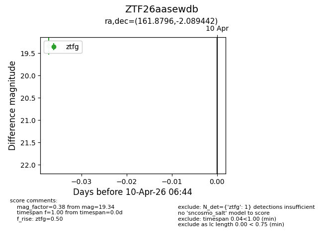
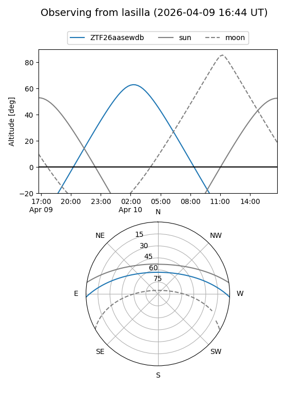
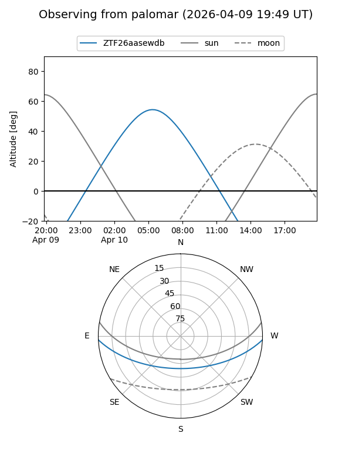

ZTF26aasewdb
Target ZTF26aasewdb at 2026-04-10 06:54
Aliases and brokers:
FINK: link
Lasair: link
ALeRCE: link
alt names
ZTF26aasewdb (ztf,fink_ztf)
Coordinates:
equatorial (ra, dec) = 161.8796,-2.08944
equatorial (HMS+DMS) = 10:47:31.12,-02:05:21.99
galactic (l, b) = (252.3717,+48.23626)
Flags:
Photometry:
last ztfg=19.34
1 ztfg detections
Lightcurve

Visibility


Additional plots